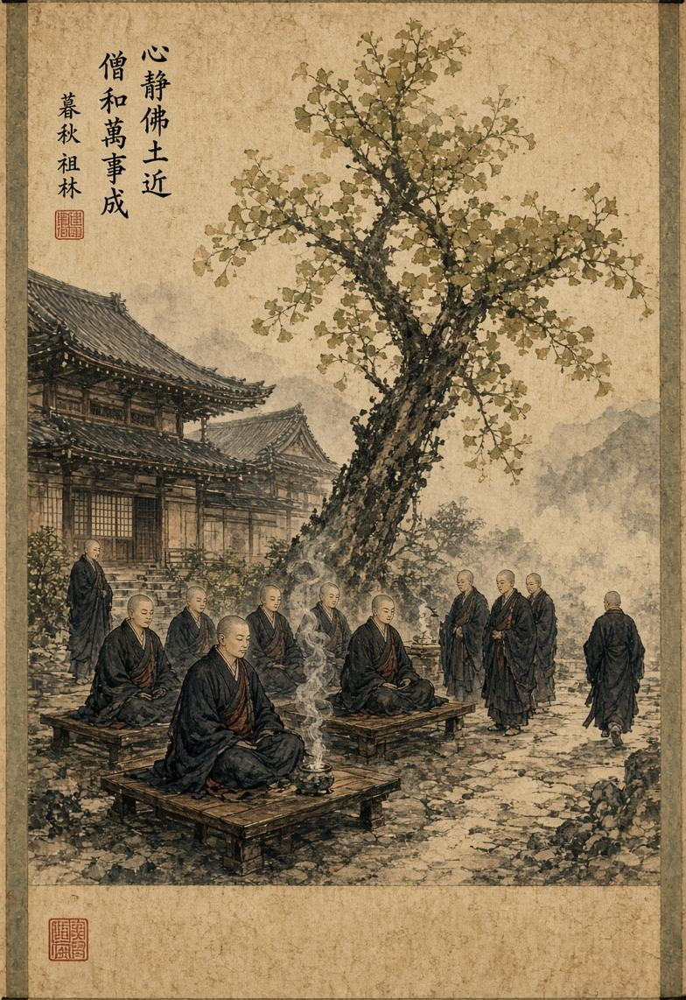
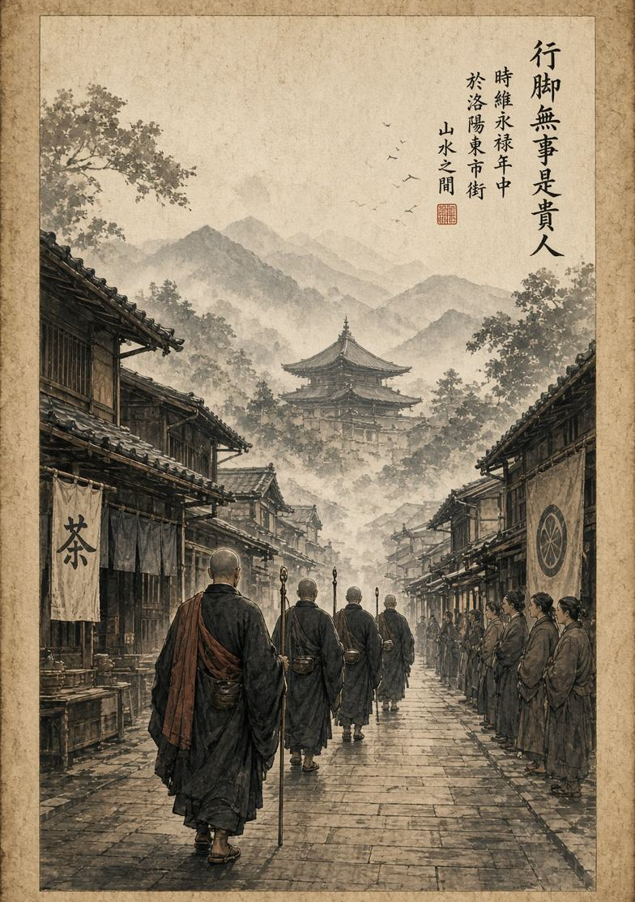
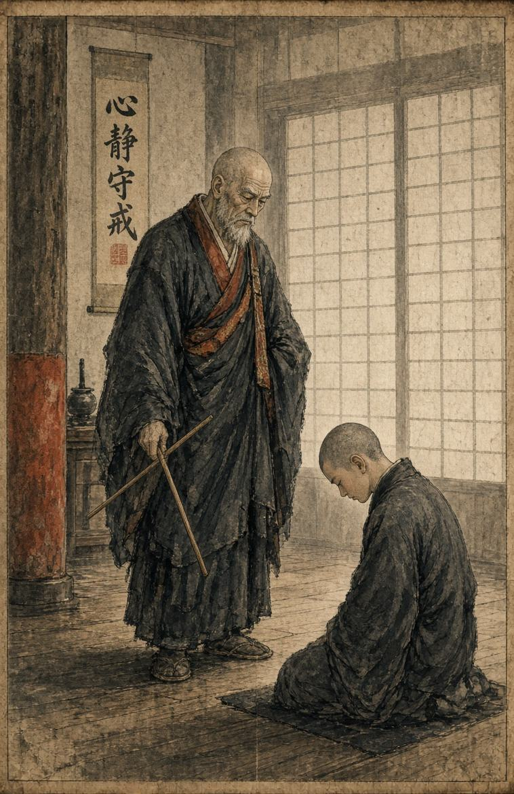

Устав храма
Каждый монах, вступающий в Сангху, принимает не только путь Дхармы, но и правила общины. Устав монастыря определяет порядок жизни монахов, их обязанности, отношения друг с другом и правила поведения за пределами храма.
Каждый монах, вступающий в Сангху, принимает не только путь Дхармы, но и правила общины. Устав монастыря определяет порядок жизни монахов, их обязанности, отношения друг с другом и правила поведения за пределами храма. Его цель - сохранить дисциплину, уважение и единство Сангхи.
Жизнь в Сангхе
Монах должен уважать храм, своих братьев по Сангхе и людей, которые обращаются за помощью. Он обязан соблюдать основные буддийские обеты, участвовать в жизни общины и выполнять поручения, данные Бонзой или старшими монахами. Личная выгода не должна становиться причиной поступков монаха. Имущество, полученное храмом в качестве подношений, считается собственностью общины и используется для нужд Сангхи. Монах не должен присваивать храмовое имущество или использовать положение внутри общины ради собственного богатства и влияния.
Каждый монах также обязан поддерживать порядок в храме. Уход за территорией, помощь другим монахам, участие в обрядах и выполнение повседневных обязанностей являются частью монашеской жизни.


Поведение за пределами храма
За пределами монастыря монах остаётся представителем Сангхи. Его слова и поступки могут повлиять не только на его собственную репутацию, но и на отношение людей ко всему храму. Монах не должен без причины провоцировать конфликты, оскорблять людей, использовать имя храма ради личной выгоды или вмешиваться в дела других организаций без необходимости. Если он участвует в переговорах, обрядах, паломничестве или других мероприятиях, он обязан помнить о нейтралитете Сангхи. Это не означает, что монах должен молча терпеть любое зло. Он может защищать храм, помогать людям и вмешиваться в опасные ситуации, когда это действительно необходимо. Однако его действия должны соответствовать Дхарме и правилам общины.
Дисциплина и нарушение
Если монах нарушает устав, Бонза или старшие монахи могут провести с ним разбор ситуации. В зависимости от тяжести нарушения ему может быть сделано предупреждение, назначено дополнительное служение храму, временно ограничено участие в некоторых мероприятиях или применено другое внутреннее наказание. Главная цель дисциплины - не унизить нарушителя, а помочь ему осознать свою ошибку и вернуться на путь Сангхи. Каждый монах способен ошибиться, но от него ожидается готовность признать ошибку и исправить её.
В тяжёлых случаях, когда монах сознательно нарушает основные принципы храма и отказывается исправляться, Сангха может лишить его права называться монахом данного храма.

Мир приходит изнутри. Не ищи его снаружи.Будда Шьякмуни